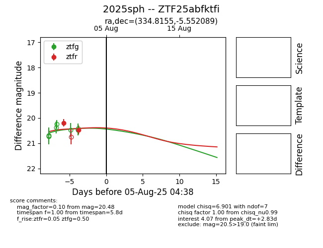

Target 2025sph at 2025-08-05 04:38, see:
FINK: fink-portal.org/2025sph
Lasair: lasair-ztf.lsst.ac.uk/objects/2025sph
ALeRCE: alerce.online/object/2025sph
TNS: wis-tns.org/object/2025sph
YSE: ziggy.ucolick.org/yse/transient_detail/2025sph
alt names
ZTF25abfktfi (ztf,fink)
2025sph (tns,yse)
coordinates:
equatorial (ra, dec) = (334.8155,-5.55209)
galactic (l, b) = (56.7931,-47.87883)
photometry
last ztfg=20.48, ztfr=20.48
1 ztfg, 2 ztfr detections
